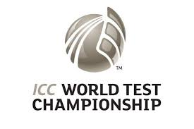
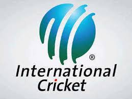
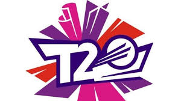

Cricket: The Gentleman’s Game
Dive into the world of cricket. Explore matches, players, and epic moments in cricket history.

Types of Cricket Matches

Test Matches
The traditional and longest format of cricket, spanning up to 5 days. Known for its emphasis on skill, patience, and strategy.

One-Day Internationals (ODIs)
A 50-over format where each team bats and bowls for a set number of overs. It’s fast-paced and more dynamic compared to Test cricket.

T20 Matches
The shortest and most explosive format, where each team gets just 20 overs. Perfect for thrilling finishes and entertaining cricket.
"Cricket is not just about runs and wickets. It's about resilience, team spirit, and passion."
- AB de Villiers
Ready to explore cricket?
Join us and keep up with the latest updates and matches.